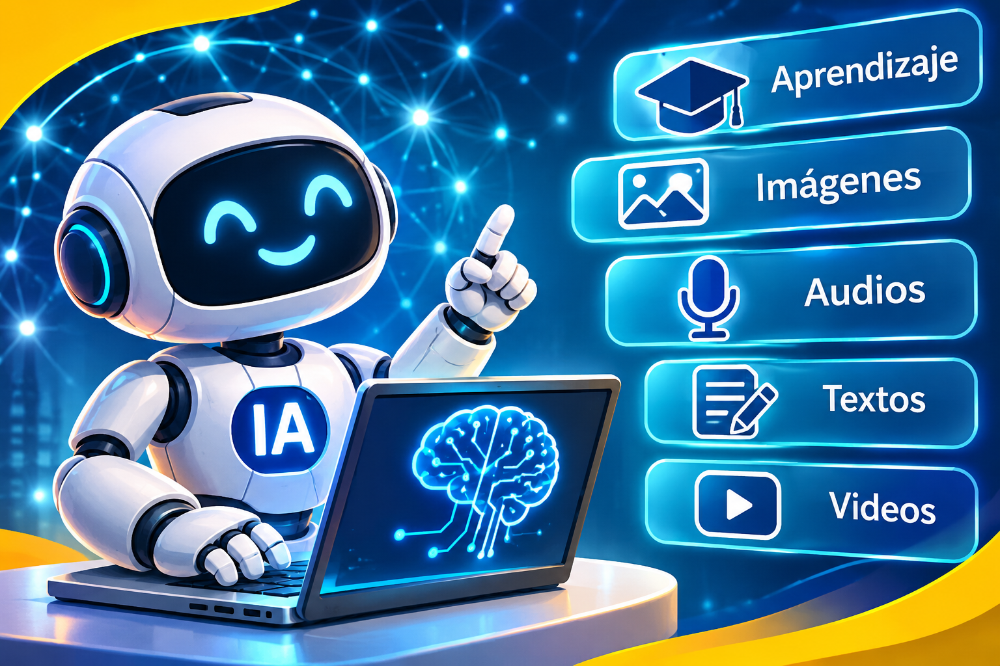

La Inteligencia Artificial (IA) es una tecnología que permite a los computadores realizar tareas que normalmente requieren capacidades humanas, como comprender preguntas, reconocer imágenes, generar textos y ayudar a resolver problemas.
Actualmente, la IA se utiliza en la educación, la medicina, las empresas y el entretenimiento. Puede ayudarnos a aprender y crear, pero debemos utilizarla de manera responsable y crítica.

Consulta este recurso para conocer cómo se relacionan la inteligencia artificial y la educación.
Explorar la educación digital en la UNESCO
Explora y aprende sobre herramientas más utilizadas de IA.
Clic para explorar Herramientas
© 2026 - Creado por: escribe aquí tu nombre
¡Aprendamos a utilizar la IA con responsabilidad!